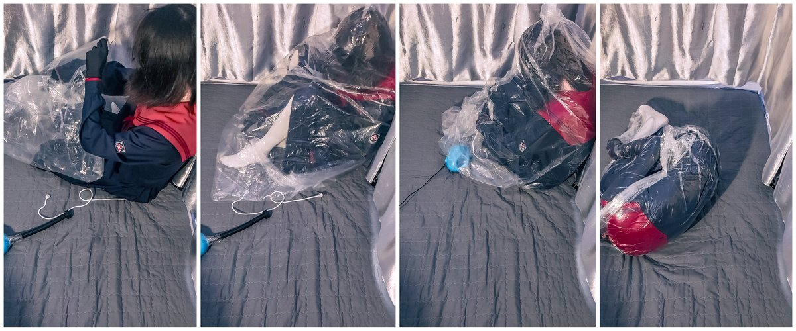

1000fo福利~


1000fo福利来啦。
继续给大家表演我们fetish的传统艺能之真空袋play😇。
被袋子紧紧包裹着一动不能动的感觉真的好舒服哦（并且好涩wwww
// 蜜柑.tar.gz
#男娘 https://t.co/hdMtGgPJea https://t.co/gwAANbAqxH
继续给大家表演我们fetish的传统艺能之真空袋play😇。
被袋子紧紧包裹着一动不能动的感觉真的好舒服哦（并且好涩wwww
// 蜜柑.tar.gz
#男娘 https://t.co/hdMtGgPJea https://t.co/gwAANbAqxH
1000fo感谢！
200->1000fo，就用了两周；500->1000fo更是用了不到一周，超乎想象。
也被好几个万粉大V关注了，其中还有私信加好友贴贴的，受宠若惊......
也谢谢大家不嫌弃我整的烂活（以及大冬天的冷笑话，没把大家冻死吧qwq）
总之感谢大家灌注喵！！
（晚点发1000fo福利www）
#男娘 https://t.co/PFJHJfmzfn
200->1000fo，就用了两周；500->1000fo更是用了不到一周，超乎想象。
也被好几个万粉大V关注了，其中还有私信加好友贴贴的，受宠若惊......
也谢谢大家不嫌弃我整的烂活（以及大冬天的冷笑话，没把大家冻死吧qwq）
总之感谢大家灌注喵！！
（晚点发1000fo福利www）
#男娘 https://t.co/PFJHJfmzfn